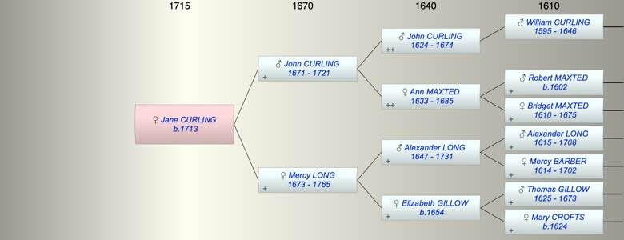

| [Index] |
| Jane CURLING (1713 - ) |
|  |
| b. 1713 at St Laurence |
| Parents: |
| John CURLING (1671 - 1721) |
| Mercy LONG (1673 - 1765) |
| Events in Jane CURLING (1713 - )'s life | |||||
| Date | Age | Event | Place | Notes | Src |
| 1713 | Jane CURLING was born | St Laurence | Note 1 | ||
| 1721 | 8 | Death of father John CURLING (aged 50) | St Laurence | ||
| 1765 | 52 | Death of mother Mercy LONG (aged 92) | St Laurence | Note 2 | |
| Note 1: bap St Laurence 6 May 1713 ex FMP PR |
| Note 2: buried 19 Mar 1765 St Laurence ex FMP PR |
| Personal Notes: |
| Not mentioned in either of her parent's wills so she is likely to have predeceased them. |
| Created on a Mac™ using iFamily for Mac™ on 8 Oct 2023 |